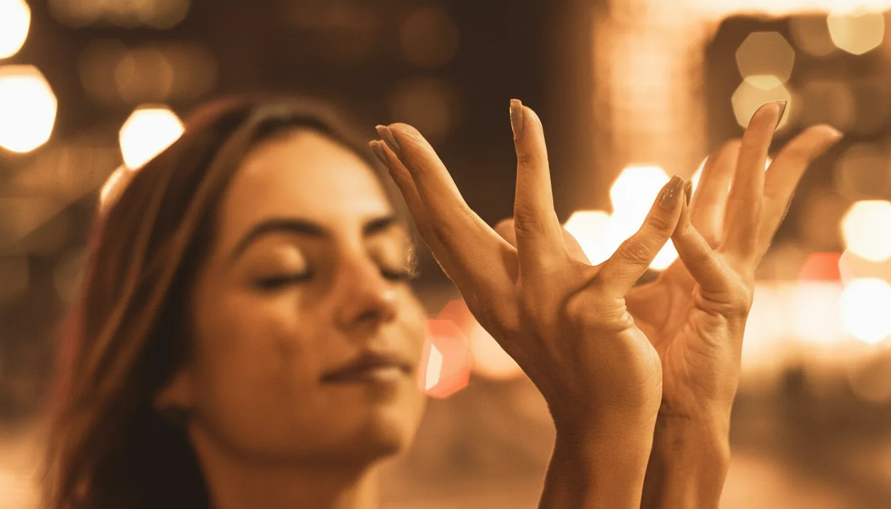
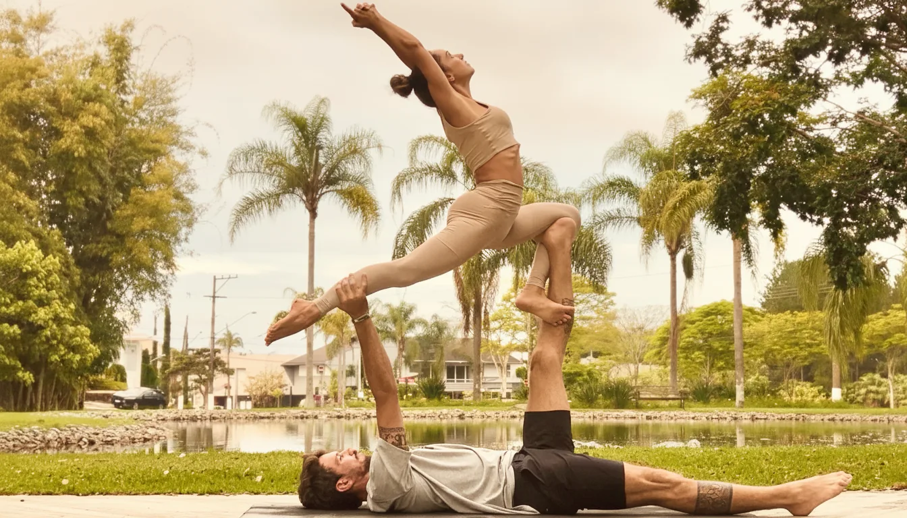
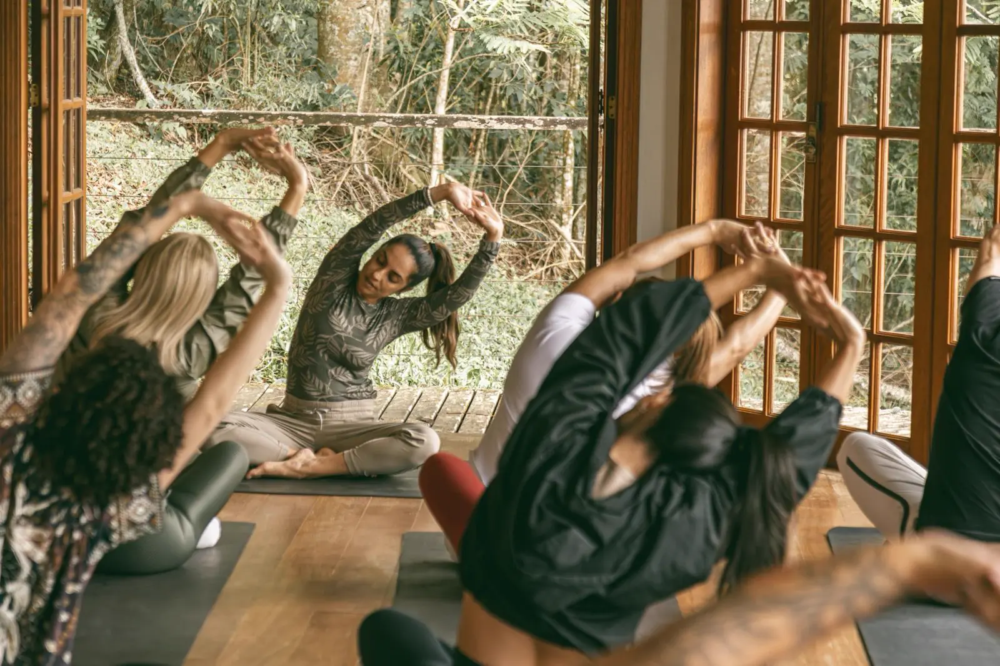

Yoga Personal
Toda a atenção da Gi. Só para você. Sessões individuais pensadas para o seu corpo, seus objetivos e seus limites. Online e no horário que encaixa na sua rotina.
Consulte disponibilidade →Descubra como mulheres que já tentaram tudo estão resgatando sua identidade através do Yoga, sem abandonar ninguém, sem culpa, sem falsas promessas.
A Promessa
Há um tipo de cansaço que não passa com sono. Não é preguiça. Não é falta de força de vontade.
É o que acontece quando você carrega tudo: filhos, trabalho, casa, família. E no final do dia não sobrou nada para você. A dor nas costas que virou rotina. A mente que não desliga, nem dormindo. A sensação de que, em algum ponto entre a maternidade e a correria, você desapareceu para si mesma.
Você já tentou de tudo para sair disso. YouTube, aplicativos, academia.
Começa com ânimo, a vida atropela, e você termina se convencendo que não é "o tipo de pessoa que consegue manter", que yoga é para quem tem tempo, flexibilidade, aquela tranquilidade que você não tem.
Mas e se o problema nunca foi você? E se foi tentar fazer sozinha, sem estrutura, sem alguém que realmente te vê?
Você não desistiu de yoga. Você desistiu de apps sem resposta e YouTube sem ninguém te vendo. Essa vez é estruturalmente diferente: há horário fixo, há correção em tempo real, há alguém que percebe quando você falta.
Em 2 semanas você dorme melhor. Em 4, sua respiração muda. Em 8, você percebe: eu voltei para mim.
Não é promessa. É o que minhas alunas costumam relatar.
Aqui você não pratica yoga sozinha. Pratica ao vivo, com acompanhamento real, quatro vezes por semana. Uma hora que é completamente sua.
Pra Quem É
Você tem 40 anos ou mais e quer uma prática que respeite seu corpo e sua rotina
Seja qual for seu nível — iniciante, intermediária ou quem ficou um tempo longe do tapete
Quer aliviar ansiedade, estresse, burnout e dor nas costas com consistência, não com força de vontade
Precisa dormir melhor e desligar a cabeça ao menos uma vez por dia
Não pode (ou não quer) se deslocar até um estúdio toda semana
Não precisa de experiência. Não precisa de flexibilidade. Não precisa de uma vida organizada para começar.
Há apenas o seu ritmo, e alguém ao seu lado para que você não precise ir sozinha.
Sobre a Professora
Professora de Yoga · Bailarina · Cirurgiã-Dentista · Mãe
Professora de yoga e acro yoga, bailarina clássica, cirurgiã-dentista e mãe de três meninas. Formada em mais de seis modalidades com certificação em Acroyoga pela Escola de Montreal, referência internacional na prática.
Com mais de duas décadas atravessando o corpo como espaço de estudo, ela construiu uma base que poucos professores de yoga têm: o olhar clínico da dentista, a precisão do ballet clássico e a escuta do yoga formam uma tríade rara.
Gi não chegou ao yoga como professora. Chegou como aluna, nos momentos em que o peso da vida parecia grande demais para carregar sozinha. Ela entende sua dor não por teoria, mas por experiência.
Hoje, como mãe de três meninas, essa prática ganhou um novo sentido. Não é mais só sobre o corpo em movimento. É sobre o exemplo silencioso de uma mulher que aprendeu, vez após vez, a se encontrar de volta.
Modalidades
Quatro vezes por semana. Aulas ao vivo com correção de postura em tempo real, sem sair de casa. Não é um vídeo gravado. É a Gi ao vivo, vendo você, ajustando sua postura, respeitando seu ritmo e te esperando toda semana.
Aulas pelo Zoom — celular, tablet ou computador, de onde você estiver
Cada semana tem um tema: cura, resgate, identidade, força, presença
Todas as aulas gravadas na Hotmart — para os dias em que a agenda não cooperar
Comunidade privada no WhatsApp com mulheres que vivem a mesma rotina
Meditação curta ao final de cada aula para fechar o ciclo
Câmera opcional no começo, uma toalha entre o sofá e a TV já basta.
Além das aulas online, a Gi oferece outras modalidades para quem quer um espaço diferente ou mais personalizado. Entre em contato para consultar disponibilidade e valores.

Toda a atenção da Gi. Só para você. Sessões individuais pensadas para o seu corpo, seus objetivos e seus limites. Online e no horário que encaixa na sua rotina.
Consulte disponibilidade →
Prática em grupo, duplas ou individualmente. Leveza, força e conexão. Uma prática que une yoga, acrobacia e cumplicidade. Para quem deseja viver algo novo de uma forma leve e divertida.
Consulte disponibilidade →
A pausa que você merece há anos. Experiências imersivas ao longo do ano onde o tempo é todo seu. Longe da agenda e das notificações.
Ver próximas datas →O Que Está Incluído
Quem assina as aulas mensais não entra só nos encontros ao vivo. Entra com suporte, conteúdo e uma comunidade para os dias em que a rotina apertar.
Perdeu um encontro? Quer repetir a sequência favorita? A biblioteca completa fica disponível para acessar quando e quantas vezes quiser.
Instruções claras para entender cada postura, corrigir o alinhamento e evitar erros comuns na prática.
Quando a agenda não perdoa, sessões curtas de 20 minutos para não perder a continuidade. Manter o hábito nos dias difíceis é o que faz a prática durar.
Práticas curtas para desligar a cabeça e recuperar o foco. Sem jargão, sem misticismo. Só você, a respiração e alguns minutos.
Uma comunidade de mulheres que vivem a mesma rotina. Um espaço para compartilhar, se motivar e sentir que você não está fazendo isso sozinha.
Dúvida sobre uma postura? Algo no corpo que não parece certo? A Gi responde você de forma direta e personalizada.
Benefícios
Yoga regular regula o sistema nervoso e reduz o cortisol, o hormônio do estresse que impede o sono profundo. A maioria das alunas nota diferença nas primeiras semanas.
Postura corrigida em tempo real, alinhamento trabalhado sessão por sessão. Sem fazer errado por conta própria, sem se machucar.
Uma hora de respiração e movimento consciente faz o que nenhum aplicativo consegue: faz o corpo inteiro desacelerar de verdade.
Horários fixos quatro vezes por semana. A aula está lá, a Gi está lá. Você só precisa aparecer.
Sem deslocamento, sem trânsito, sem estacionamento. Em poucos minutos você está pronta. O tempo que você economiza já vale a prática.
Sem filho pedindo, sem mensagem de trabalho, sem nada da sua lista. Aquele espaço é só seu.
| Dia da semana | Horário | Duração |
|---|---|---|
| Segunda-feira | 8h00 | 1 hora |
| Terça-feira | 8h30 | 1 hora |
| Quinta-feira | 8h30 | 1 hora |
| Sexta-feira | 7h00 | 1 hora |
Se a semana apertar, todas as aulas ficam gravadas e disponíveis na Hotmart. Você nunca perde uma aula.
R$0
Gratuita, sem compromisso
1 aula completa ao vivo
Única, sem compromisso
R$250/mês
~16 aulas por mês · R$15,60 por aula
4 aulas/semana ao vivo
+ todos os bônus incluídos
R$ 250 por mês é R$ 15,60 por aula. Menos que um delivery. Menos que uma hora de estacionamento em estúdio. Com a diferença de que essa hora é sua, sem sair de casa, sem culpa, sem deslocamento.
Você investe no plano de saúde da família, na escola dos filhos, em tudo que eles precisam. Quando foi a última vez que investiu em quem sustenta tudo isso?
Depoimentos
Não amanhã.
Não na segunda-feira que sempre some.
Hoje.
Uma hora. Quatro vezes por semana. Com alguém que viveu o que você está vivendo e encontrou o caminho de volta.
Precisa de uma estrutura que funciona. De uma presença que não julga. De um espaço que é só seu.
Isso é o que Gi Borba oferece.
Vagas limitadas a 5 mulheres por semana, para garantir presença pessoal.
Sem cartão de crédito. Sem compromisso. Apenas a experiência.
Empresas selecionadas especialmente para ajudar nossas alunas a transformarem a prática em um momento real de autocuidado, presença e reconexão consigo mesmas.
Objetos criados para apoiar momentos de pausa, presença e reconexão consigo mesma.
Tapetes de yoga, cadeiras de meditação e peças com propósito, fabricadas no Brasil desde 2017.
Em um mundo que não para, um convite para respirar, pausar e escolher o seu próprio ritmo.
Peças e experiências criadas para apoiar presença, movimento com propósito e momentos de reconexão consigo mesma.
As dúvidas mais comuns e os termos essenciais, respondidos com honestidade.
Yoga é uma prática que combina posturas físicas, respiração consciente e atenção ao corpo. Serve para reduzir ansiedade, melhorar o sono, aliviar dores crônicas e recuperar a sensação de equilíbrio. Não é religião, não exige flexibilidade e não depende de nenhuma crença espiritual — funciona por biologia, não por misticismo.
Quando o sistema nervoso vive em estado crônico de alerta — o que acontece com a maioria das pessoas em rotinas de alta pressão — o corpo acumula tensão que nenhuma atividade convencional consegue desfazer por completo. O yoga atua diretamente nesse sistema: através da respiração controlada e do movimento consciente, ativa o sistema nervoso parassimpático e interrompe o ciclo de cortisol elevado.
Do ponto de vista prático: uma hora de yoga bem conduzida reduz a frequência cardíaca, diminui a pressão arterial, melhora a qualidade do sono naquela noite e alivia tensões musculares que a pessoa carregava sem perceber. Com a prática regular, esses efeitos se tornam cumulativos e estruturais.
As duas formas estão corretas em português brasileiro. "Ioga" é a grafia aportuguesada, adotada pelo Acordo Ortográfico de 1990. "Yoga" é a grafia original em sânscrito e a mais usada no Brasil em contexto cotidiano, profissional e nas buscas online. Ambas se referem à mesma prática.
Na prática, "yoga" domina absolutamente o uso real — nas buscas do Google, nas redes sociais, nos estúdios e nas conversas. "Ioga" aparece principalmente em textos formais ou jornalísticos que seguem estritamente o acordo ortográfico. Para fins de comunicação e SEO, "yoga" é o termo a priorizar.
"Yoga" vem da raiz sânscrita "yuj", que significa unir, conectar, integrar. A tradução mais precisa é "união" — a integração entre corpo, mente e respiração. Não é uma tradução poética: é uma descrição literal do que a prática faz fisiologicamente — criar coerência entre sistemas que habitualmente operam em conflito.
No contexto original, a "união" se referia à integração do indivíduo com o todo — um conceito filosófico profundo. Na prática contemporânea e laica, a mesma palavra descreve algo igualmente real: o estado de coerência interna que emerge quando corpo, respiração e atenção trabalham juntos em vez de em direções opostas.
O yoga surgiu na Índia há mais de 5.000 anos, desenvolvido dentro das tradições filosóficas do subcontinente indiano. Os primeiros registros escritos aparecem nos Vedas, textos sagrados indianos. A sistematização da prática como a conhecemos hoje — com posturas, respiração e meditação integradas — foi compilada por Patañjali nos Yoga Sutras, por volta do ano 400 d.C.
O yoga chegou ao Ocidente no final do século XIX e início do XX, e ao Brasil de forma mais estruturada na segunda metade do século XX. No Brasil, destaca-se a tradição SwáSthya, desenvolvida pelo mestre Caio Miranda, com raiz genuinamente brasileira. Hoje, o yoga praticado no mundo ocidental é majoritariamente focado nos aspectos físicos e de regulação mental — sem necessidade de adesão à filosofia original.
Yoga é as duas coisas — e também pode ser nenhuma das duas. É uma prática que tem dimensão física (posturas, força, flexibilidade), dimensão mental (atenção, regulação do sistema nervoso) e, para quem escolher, dimensão filosófica ou espiritual. Cada praticante decide até onde quer ir. Os benefícios físicos e mentais estão disponíveis independentemente de qualquer escolha espiritual.
Classificar yoga como "só exercício físico" seria reduzir. Classificar como "só prática espiritual" seria excluir. A realidade é que yoga é uma tecnologia de integração — entre corpo e mente, entre esforço e descanso, entre o que você faz e o que você sente. Essa integração produz benefícios fisiológicos documentados, independentemente da cosmologia de quem pratica.
Sim. A OMS classifica yoga como atividade física moderada a vigorosa, dependendo da modalidade. Modalidades ativas como Vinyasa e Yoga HIIT atingem frequência cardíaca comparável a uma caminhada acelerada ou corrida leve. Modalidades mais suaves como Hatha e Restaurativo promovem benefícios musculares, de flexibilidade e de regulação do sistema nervoso sem carga cardiovascular intensa.
Para as recomendações globais de atividade física — 150 minutos de atividade moderada por semana — o yoga ao vivo com um professor qualificado conta integralmente. Isso é especialmente relevante para quem tem restrições articulares ou cardiovasculares que limitam outras formas de exercício.
Sim. Flexibilidade não é pré-requisito para o yoga — é consequência. Quem começa sem flexibilidade tem exatamente o yoga que precisa: adaptado ao corpo que tem hoje. Forçar além do que o corpo oferece não acelera o processo — machuca. Com prática regular, o tecido conjuntivo cede gradualmente, e a abertura acontece de dentro para fora.
A imagem do yoga nas redes sociais filtra, por natureza, o que é visualmente impressionante. Corpos rígidos fazendo o melhor que conseguem não rendem engajamento. Esse filtro cria a falsa ideia de que yoga é para quem já é flexível — quando na realidade é o oposto. A flexibilidade que você ainda não tem é exatamente o motivo para começar.
Anatomicamente: a rigidez corporal raramente é só muscular. É também uma resposta do sistema nervoso — o músculo recebeu a mensagem de "fique alerta". O yoga trabalha essa camada. Após algumas semanas de prática consistente, a maioria dos iniciantes percebe mudanças não porque o músculo cresceu, mas porque o sistema nervoso aprendeu que é seguro ceder.
Para começar yoga em casa: escolha um espaço com área suficiente para deitar de braços abertos, providencie um tapete antiderrapante, vista roupa confortável e conecte-se a uma aula com professor ao vivo. Evitar começar sozinha com vídeos gravados — sem correção de postura em tempo real, é fácil criar hábitos errados que causam dor em vez de alívio.
O erro mais comum de quem começa em casa é substituir o professor por uma biblioteca de vídeos. Vídeos gravados são úteis para complementar a prática, mas não veem você. Um professor ao vivo vê o alinhamento, percebe a compensação que você faz sem saber, e adapta a aula ao que seu corpo está fazendo naquele dia — não ao que o roteiro previu.
Asana: nome dado a cada postura do yoga.
Savasana: descanso final da aula, feito deitada, para o corpo integrar a prática.
Para as primeiras semanas: comece com aulas de 45 a 60 minutos duas ou três vezes por semana. Não pule o descanso final (savasana). Não force posturas que causam dor aguda. E escolha um estilo acessível para iniciantes — Hatha ou Yoga Restaurativo são os pontos de entrada mais adequados para a maioria dos adultos.
Para resultados perceptíveis no sono, na ansiedade e na flexibilidade: duas a três vezes por semana é suficiente para começar. Para quem quer progressão mais rápida em força e mobilidade: quatro vezes ou mais. Praticar uma vez por semana mantém o contato com a prática, mas raramente produz mudanças estruturais no sistema nervoso.
A frequência ideal depende do objetivo. Para regulação do sistema nervoso e melhora do sono, a consistência importa mais do que a intensidade: duas sessões por semana durante dois meses superam em muito uma sessão por dia durante duas semanas. O corpo — e especialmente o sistema nervoso — responde a padrões repetidos, não a esforços isolados.
Sim, é possível e benéfico praticar yoga diariamente — com uma condição: variar a intensidade. Dias de prática ativa (Vinyasa, Hatha intenso) devem alternar com dias de prática regenerativa (Yoga Restaurativo, Yoga Nidra, respiração). O erro é manter a mesma intensidade todos os dias, sem deixar o sistema nervoso e o tecido conjuntivo recuperarem.
O corpo humano adulto saudável se adapta bem à prática diária de yoga quando a prática é inteligentemente variada. Culturas que praticam yoga diariamente há gerações sabem disso: a manhã começa com uma prática suave de ativação; sessões mais intensas ficam para momentos específicos da semana. Essa variação não é preguiça — é periodização.
Não existe um horário universalmente melhor — existe o horário que você consegue manter. Dito isso: yoga pela manhã tende a energizar e estabelecer o tom mental do dia. Yoga à tarde ou à noite tende a desacelerar, reduzir a tensão acumulada e preparar o sistema nervoso para o sono. O pior horário é aquele que você nunca consegue respeitar.
Para quem tem dificuldade de dormir: uma aula de Hatha, Restaurativo ou Yoga Nidra entre 18h e 21h produz redução mensurável nos níveis de cortisol antes de dormir. Para quem quer energia e foco pela manhã: uma prática de 30 a 45 minutos antes do café cria um estado de alerta calmo que a cafeína sozinha não consegue replicar.
Sessões de 45 a 60 minutos, duas a três vezes por semana, produzem resultados perceptíveis em duas a quatro semanas — especialmente em qualidade do sono, nível de ansiedade e mobilidade. Os primeiros resultados costumam aparecer antes de qualquer mudança visível no corpo: a cabeça muda antes dos músculos.
A ordem de aparecimento dos resultados é previsível: primeiro vem a melhora do sono (semanas 1 a 2). Depois a redução da ansiedade e do nível basal de tensão muscular (semanas 2 a 6). Depois as mudanças de flexibilidade e força (semanas 4 a 12). As mudanças de composição corporal são as últimas a aparecer e as mais dependentes de outros fatores como alimentação e consistência.
Para começar: um tapete de yoga antiderrapante (6mm de espessura é suficiente), roupa confortável que permita movimento, um espaço de aproximadamente 2m x 1m e conexão à internet para aulas ao vivo. Blocos de yoga e cintos são úteis mas não obrigatórios no início — uma professora experiente adapta as posturas ao que você tem em casa.
O investimento inicial é mínimo. O tapete é o único equipamento verdadeiramente necessário, e um bom tapete de entrada custa entre R$80 e R$150. O que determina o resultado não é o equipamento — é a consistência da prática e a qualidade do acompanhamento. Uma aula ao vivo com correção de postura em tempo real vale mais do que qualquer acessório.
Sim, e a evidência é robusta. Estudos publicados em periódicos como o Journal of Clinical Psychiatry e o Frontiers in Psychiatry documentam redução significativa de sintomas de ansiedade em praticantes regulares de yoga. O mecanismo é fisiológico: técnicas de respiração ativam o nervo vago, reduzem o cortisol e desaceleram o sistema nervoso autônomo — efeitos mensuráveis em uma única sessão.
Pranayama: prática consciente da respiração usada para regular o sistema nervoso e mudar o estado do corpo em poucos minutos.
A diferença entre "fazer yoga uma vez" e "praticar yoga regularmente" é a diferença entre apagar um incêndio e instalar um sistema de prevenção. Uma sessão reduz a ansiedade momentaneamente. A prática consistente recalibra o ponto de equilíbrio do sistema nervoso — o estado que antes exigia esforço começa a ser o estado padrão.
Para quem vive em estado crônico de alerta — prazos, responsabilidades que nunca terminam, a sensação de que o corpo nunca desliga — o yoga oferece uma via de saída que não depende de força de vontade: você não precisa "querer relaxar". O sistema nervoso responde ao estímulo da respiração independentemente da intenção consciente.
Sim. O yoga melhora o sono por dois caminhos complementares: regula os picos de cortisol ao longo do dia e, nas horas antes de dormir, ativa o sistema nervoso parassimpático. Um estudo publicado na Revista Brasileira de Medicina de Família e Comunidade documentou melhora significativa da insônia em mulheres na pós-menopausa com prática regular de yoga. A maioria das praticantes relata melhora perceptível nas primeiras duas semanas.
Savasana: postura de descanso final que desacelera o corpo e sinaliza ao sistema nervoso que a prática terminou.
A insônia mais comum não é a incapacidade de adormecer — é a incapacidade de desligar. A mente continua processando o dia depois que o corpo deitou. Isso acontece porque o sistema nervoso nunca recebeu o sinal claro de que o dia terminou. O yoga oferece esse sinal: posturas suaves, respiração longa e o descanso final da aula preparam o sistema nervoso para o descanso de forma que a maioria das outras práticas não consegue.
Sim — quando praticado com orientação adequada. O yoga atua na dor lombar crônica por múltiplos caminhos: fortalece a musculatura profunda do core, melhora a mobilidade dos quadris e isquiotibiais (que quando encurtados aumentam a pressão lombar) e corrige padrões posturais inadequados. Atenção: fazer yoga sem professor para condições de coluna pode piorar em vez de melhorar — a presença de quem vê e adapta é fundamental.
A dor lombar crônica raramente tem uma causa única. É quase sempre uma combinação de músculos enfraquecidos que sobrecarregam as vértebras, tecidos encurtados que distorcem o alinhamento e padrões de movimento inadequados aprendidos ao longo de anos. O yoga endereça todas essas camadas simultaneamente — o que nenhum exercício isolado consegue.
Evidências preliminares sugerem que sim. Estudos de neuroimagem publicados no Journal of Alzheimer's Disease e na Frontiers in Aging Neuroscience identificaram maior volume de matéria cinzenta em regiões associadas à memória e ao processamento emocional em praticantes de longa data de yoga e meditação, comparados a não praticantes da mesma faixa etária. A prática regular parece ter efeito neuroprotetor.
O mecanismo proposto envolve a redução crônica do cortisol — que em níveis elevados é neurotóxico para o hipocampo, região crítica para a memória. Ao reduzir o estado de alerta crônico, o yoga protege estruturas cerebrais que o estresse degrada ao longo do tempo. Não é uma cura para o envelhecimento, mas é uma das ferramentas com melhor custo-benefício para preservar a saúde cognitiva.
Com a prática regular, o corpo passa por mudanças progressivas: melhora da qualidade do sono (semanas 1 a 2), redução dos níveis basais de ansiedade (semanas 2 a 6), aumento de flexibilidade e força muscular (semanas 4 a 12), melhora postural (meses 2 a 4) e, em muitos casos, redução de dores crônicas e melhora da composição corporal (meses 3 em diante). O sistema nervoso muda antes do corpo.
O que a maioria das pessoas não espera: as mudanças mais profundas não são visíveis no espelho. São a sensação de acordar menos tensa, a respiração que ficou mais funda sem que você precisasse lembrar de respirar, a capacidade de notar quando está se sobrecarregando antes que o corpo entre em colapso. Essas mudanças chegam primeiro — e são as que ficam.
Sim. Yoga praticado sem orientação adequada pode causar lesões — especialmente na coluna, joelhos e ombros. Os erros mais comuns são: forçar posturas além do limite atual do corpo, substituir a respiração pelo esforço muscular e copiar posturas de vídeos sem adaptar ao próprio corpo. A presença de uma professora que vê e corrige em tempo real é a principal proteção contra esses riscos.
A maioria das lesões no yoga não ocorre em posturas avançadas — ocorre em posturas aparentemente simples, feitas com alinhamento incorreto de forma repetida. Um joelho que cede para dentro em postura de pé por semanas produz o mesmo dano que uma lesão aguda. Por isso, começar com professor ao vivo — e não com vídeos — é uma decisão de segurança, não de conforto.
Para quem está em burnout, o ponto de entrada é o yoga mais suave disponível: Yoga Restaurativo ou Yoga Nidra. Adicionar intensidade a um sistema nervoso esgotado é contraproducente. O objetivo das primeiras semanas não é "fazer mais" — é ensinar o sistema nervoso que é seguro parar. Isso, por si só, já é o trabalho mais importante.
Yoga Restaurativo: prática de descanso ativo em que as posturas são sustentadas com apoio, sem esforço muscular relevante.
Yoga Nidra: relaxamento guiado feito deitada, entre vigília e sono, com foco em recuperação profunda.
O paradoxo do burnout é que quem mais precisa descansar é quem mais resiste a descansar. A mente esgotada continua gerando tarefas, justificativas e culpa mesmo quando o corpo já não aguenta. O Yoga Restaurativo funciona exatamente nesse contexto porque não pede esforço — pede rendição. E a rendição, praticada de forma estruturada e segura no tapete, começa a se transferir para a vida fora dele.
Sim, e crescentemente é prescrito como tal. Organizações como a American Psychological Association e o National Institutes of Health reconhecem o yoga como terapia complementar eficaz para ansiedade, depressão leve a moderada, dor crônica, insônia e TEPT. No Brasil, o Ministério da Saúde incluiu práticas integrativas — entre elas o yoga — no SUS em 2017.
Terapia complementar significa que o yoga age ao lado de tratamentos convencionais, não no lugar deles. Para quem está em acompanhamento psicológico ou psiquiátrico: o yoga complementa, não substitui. O que ele oferece que a terapia falada não oferece é o acesso ao corpo — à tensão que o sistema nervoso carrega de forma não-verbal e que a conversa sozinha raramente alcança.
Sim. Estudos clínicos documentam redução significativa da frequência e intensidade das ondas de calor em mulheres que praticam yoga regularmente — particularmente técnicas de respiração que ativam o sistema nervoso parassimpático. O yoga também demonstra eficácia para os outros sintomas da menopausa: insônia, oscilações de humor, rigidez articular e ansiedade elevada.
Pranayama: técnicas respiratórias do yoga que ajudam a reduzir hiperativação, melhorar tolerância ao estresse e estabilizar o ritmo interno.
O mecanismo não é hormonal — o yoga não repõe estrogênio. Mas atua diretamente nos sistemas que o estrogênio regulava: o sistema nervoso autônomo (que controla a temperatura corporal), o sistema límbico (que processa emoções) e o sistema musculoesquelético (que sofre com a perda de elasticidade). Abordar esses sistemas por fora — via respiração, movimento e atenção — produz alívio real e mensurável.
Não. O yoga é uma das práticas com menor barreira de entrada para adultos mais velhos. Não há limite de idade para começar, e os benefícios são proporcionalmente maiores para quem começa depois dos 40 — porque é exatamente nessa fase que os principais problemas que o yoga resolve se instalam: insônia, ansiedade, dores articulares, rigidez, esgotamento.
O corpo de uma mulher de 50 anos que nunca praticou yoga não está "atrasado" — está no ponto de partida. E esse ponto de partida tem vantagens que os 20 anos não tinham: consciência corporal acumulada, motivação real em vez de estética, e disponibilidade para uma prática que exige presença em vez de velocidade. As alunas que mais evoluem são, frequentemente, as que chegam depois dos 45.
Sim. Posturas específicas de yoga aliviam cólicas, reduzem a retenção de líquido, estabilizam o humor e diminuem a irritabilidade associada à TPM. O mecanismo inclui estímulo ao sistema linfático, regulação do cortisol e ativação do nervo vago — que contrabalança o estado de hiperativação do sistema nervoso que a queda hormonal pré-menstrual provoca.
A prática durante a fase pré-menstrual deve ser mais suave do que o habitual: posturas restaurativas, flexões para frente suaves e respirações longas funcionam melhor do que fluxos dinâmicos. Durante a menstruação, a maioria das professoras recomenda evitar inversões intensas — mas manter a prática suave é benéfico, não contraindicado.
Yoga hormonal é uma prática desenvolvida pela terapeuta brasileira Dinah Rodrigues que combina posturas de yoga, respiração e técnicas de energização com o objetivo de estimular o sistema endócrino feminino. É indicado principalmente para mulheres na perimenopausa e menopausa que buscam aliviar sintomas hormonais de forma complementar. Requer acompanhamento de professora especializada na abordagem.
Diferente do yoga convencional, o yoga hormonal tem uma sequência específica e não substituível — as posturas foram escolhidas por seu efeito sobre glândulas específicas. Por isso, é uma das modalidades em que a qualificação da professora é especialmente crítica: não é qualquer aula de yoga que produz os efeitos da abordagem original.
Sim, com adaptações. A prática de yoga durante a menstruação é segura e pode aliviar desconforto — mas deve ser mais suave do que o habitual. A maioria das tradições de yoga recomenda evitar inversões intensas (como parada de cabeça e ombros) durante o fluxo mais intenso. Posturas restaurativas, flexões suaves para frente e respiração abdominal são especialmente benéficas.
O corpo durante a menstruação está em fase de descida e renovação — não de ascensão e esforço. Adaptar a prática a esse ritmo não é fraqueza, é inteligência corporal. Uma boa professora oferece variações para esse período sem que você precise pedir: ela conhece o ciclo e adapta a aula naturalmente.
O yoga contribui para o controle do peso na menopausa por três caminhos: reduz o cortisol cronicamente elevado (que favorece o acúmulo de gordura abdominal), melhora a qualidade do sono (que regula os hormônios da fome) e desenvolve consciência corporal que tende a se transferir para escolhas alimentares mais cuidadosas. Não é uma solução isolada, mas é um componente relevante.
A redistribuição de gordura que ocorre na menopausa — especialmente o aumento da circunferência abdominal — está diretamente relacionada ao aumento do cortisol e à piora do sono. O yoga endereça ambos simultaneamente. Combinado com acompanhamento nutricional adequado, a prática regular produz diferença mensurável na composição corporal ao longo de 3 a 6 meses.
Para a maioria dos adultos que começam do zero, Hatha Yoga é o ponto de entrada mais recomendado: ritmo pausado, posturas mantidas por alguns respirações, espaço para aprender o alinhamento com segurança. Yoga Restaurativo é a segunda opção, especialmente para quem está esgotada ou com dor crônica. Vinyasa é mais adequado para quem já tem alguma base ou vem de prática física regular.
Hatha Yoga: prática mais pausada, com permanência maior nas posturas.
Vinyasa: sequência fluida em que movimento e respiração avançam juntos.
Yin Yoga: prática lenta focada em tecidos conjuntivos, com permanências longas e corpo relaxado.
A escolha ideal depende do objetivo. Para quem quer aprender o básico sem pressa: Hatha. Para quem precisa de um reset do sistema nervoso: Restaurativo ou Yoga Nidra. Para quem se sente agitada demais para "ficar parada": Vinyasa, que ocupa a mente com o movimento. Para quem tem rigidez articular crônica: Yin Yoga, que trabalha o tecido conjuntivo profundo.
Yoga Nidra é uma prática de relaxamento guiado feita completamente deitada. O praticante é conduzido por voz através de camadas progressivas de consciência corporal, chegando a um estado entre vigília e sono onde o sistema nervoso se restaura profundamente. Uma sessão de 30 minutos é frequentemente descrita como equivalente a 2 a 3 horas de sono em termos de recuperação do sistema nervoso.
Savasana: posição clássica deitada de costas, com braços relaxados, usada como base para o descanso final e para práticas como Yoga Nidra.
Para fazer: deite-se em posição confortável (de preferência em savasana, de costas, braços ligeiramente afastados do corpo), feche os olhos e siga a voz da professora. Não é necessário "conseguir não pensar" — pensamentos vêm e vão normalmente. O que muda é a relação com eles: você observa sem seguir. Isso é yoga nidra em prática.
Yin Yoga é uma prática lenta onde cada postura é mantida por 3 a 10 minutos com o corpo relaxado. O alvo não são os músculos — são os tecidos conjuntivos profundos: fáscia, ligamentos e cápsulas articulares. É o único estilo de yoga que trabalha diretamente esse tecido, que não responde ao esforço muscular mas cede sob pressão suave e duradoura.
A diferença principal em relação ao Hatha e ao Vinyasa: nesses estilos, você ativa os músculos e trabalha contra a gravidade. No Yin, você relaxa completamente e usa a gravidade a seu favor. A sensação é intensa mas diferente da musculatura: é uma pressão profunda e lenta nas articulações. Para quem tem rigidez articular crônica ou mobilidade reduzida, o Yin Yoga frequentemente produz mais resultado do que qualquer outro estilo.
Neuroyoga é uma abordagem emergente que integra conhecimentos de neurociência à prática do yoga. Em vez de descrever os efeitos apenas pela tradição, o neuroyoga explica o mecanismo — como o cérebro responde ao movimento, à respiração e à atenção — e usa esse mapa para conduzir práticas mais precisas. É indicado especialmente para quem tem ansiedade, burnout ou dificuldade de conexão com práticas mais tradicionais.
Neuroyoga: leitura contemporânea do yoga que traduz posturas, respiração e atenção em linguagem de sistema nervoso, regulação e comportamento.
O que distingue o neuroyoga é o vocabulário: em vez de "abra o coração para a gratidão", o professor diz "mantenha essa postura mais três respirações porque a tolerância ao desconforto se aprende exatamente assim". O efeito no corpo é idêntico — a via de entrada é diferente. Para quem desconfia do misticismo mas reconhece que o corpo precisa de atenção, é frequentemente a porta de entrada mais eficaz.
Hatha Yoga é pausado — cada postura é mantida por algumas respirações antes de mudar. Vinyasa é fluido — os movimentos fluem sincronizados com a respiração, criando uma sequência contínua. Hatha ensina o alinhamento e a permanência; Vinyasa ensina a fluidez e a presença no movimento. Para iniciantes, Hatha é geralmente mais seguro porque permite mais tempo de aprendizado em cada postura.
Asana: cada postura praticada na aula. No Hatha, as asanas ficam mais tempo; no Vinyasa, elas entram em sequência mais contínua.
A escolha entre os dois é também uma questão de temperamento. Quem funciona melhor com estrutura e pause tende a gostar mais do Hatha. Quem precisa de movimento para entrar em quietude — e se sente presa em posturas estáticas — geralmente encontra no Vinyasa a porta de entrada perfeita. Muitos praticantes acabam combinando os dois ao longo da semana.
Yoga e pilates trabalham o corpo de formas complementares mas com ênfases distintas. O pilates foca no fortalecimento do core e na estabilidade postural — é predominantemente físico. O yoga integra respiração, atenção mental e regulação do sistema nervoso além do corpo físico. Pilates é mais indicado para reabilitação e força; yoga, para regulação mental e mobilidade.
Ambas as práticas são benéficas e frequentemente se complementam. Quem faz pilates regularmente costuma encontrar no yoga o trabalho de regulação mental e mobilidade que o pilates não oferece. Quem faz yoga frequentemente descobre no pilates um trabalho de fortalecimento muscular mais direcionado. Não é necessário escolher: muitos praticantes alternam as duas ao longo da semana.
Depende do objetivo. Para desenvolvimento de força máxima e hipertrofia muscular intensa, não. Para manutenção de força funcional, controle de peso, saúde articular e equilíbrio muscular, o yoga pode ser suficiente — especialmente modalidades mais ativas como Vinyasa e Yoga HIIT. Para a maioria das pessoas, yoga e musculação se complementam melhor do que se substituem.
O yoga desenvolve o que os praticantes chamam de "força funcional" — a capacidade de sustentar o próprio peso em múltiplas direções, com equilíbrio e controle. Sustenter uma postura de equilíbrio em pé por cinco respirações exige força muscular real, não decorativa. Quem combina yoga com musculação frequentemente percebe melhora no desempenho em ambas as práticas.
Sim, com planejamento. A recomendação geral é: yoga antes da musculação (como aquecimento e ativação) ou yoga algumas horas depois (como recuperação). Evitar yoga intenso imediatamente após musculação pesada, porque o tecido muscular fatigado não responde bem a alongamento forçado. Yoga Restaurativo ou Yoga Nidra após musculação, porém, acelera a recuperação.
Para quem treina musculação de manhã e quer fazer yoga à noite: funciona muito bem. O yoga noturno ajuda a remover o estado de tensão muscular e mental que o treino intenso deixa, melhora a qualidade do sono e prepara o corpo para o próximo treino.
Depende da modalidade. Vinyasa e Yoga HIIT elevam a frequência cardíaca a zonas de exercício moderado (55 a 70% da frequência máxima) — equivalente a uma caminhada acelerada. Hatha e Restaurativo têm baixo componente cardiovascular. Para os benefícios específicos do exercício aeróbico intenso, o yoga convencional não substitui a corrida ou o ciclismo — mas complementa com o que esses exercícios não oferecem.
O valor cardíaco do yoga vai além da frequência cardíaca durante a sessão. A redução crônica do cortisol, a melhora da variabilidade da frequência cardíaca (um marcador de saúde cardiovascular) e a regulação da pressão arterial produzidas pela prática regular são benefícios cardiovasculares que nenhuma métrica de "calorias queimadas por hora" captura.
Não. Yoga tem origens filosóficas nas tradições indianas, mas praticar yoga não exige nenhuma crença religiosa, filiação espiritual ou mudança de cosmovisão. Os benefícios físicos e mentais — redução de ansiedade, melhora do sono, alívio de dores — são disponíveis para qualquer pessoa, independentemente do que acredita. A respiração ativa o nervo vago da mesma forma em ateus e em pessoas de qualquer fé.
A confusão entre yoga e religião tem duas origens: a histórica (yoga nasceu dentro de uma tradição filosófica indiana que inclui conceitos espirituais) e a mercadológica (parte da indústria do bem-estar ocidental adotou uma estética "espiritual" misturada). Numa aula de yoga laica, o que acontece é simplesmente movimento, respiração e atenção ao corpo.
Do ponto de vista da prática laica, sim. Uma aula de yoga que se restringe ao trabalho físico, à respiração e à regulação do sistema nervoso não entra em conflito com nenhum princípio cristão. A questão relevante é o conteúdo da aula: posturas e respiração não têm afiliação religiosa; mantras, invocações e rituais espirituais específicos podem ser incompatíveis com algumas tradições.
A decisão é pessoal e depende da tradição cristã específica de cada pessoa. Muitas igrejas evangélicas, por exemplo, orientam seus membros a evitar certas práticas associadas ao ocultismo — e algumas incluem yoga nessa categoria. Outras, incluindo setores do catolicismo, reconhecem o yoga como prática corporal neutra. Consultar sua liderança religiosa é o caminho mais honesto do que buscar uma resposta universal.
Yoga secular é a prática de yoga focada exclusivamente em seus benefícios físicos e mentais, sem qualquer componente espiritual, filosófico ou ritual. Não há mantras, não há referências a divindades, não há afirmações de fé. O vocabulário é de neurofisiologia e anatomia, não de tradição. É o formato mais adequado para pessoas que querem os benefícios do yoga sem o pacote espiritual.
A distinção é importante porque o yoga secular produz os mesmos benefícios documentados que qualquer outra forma de yoga: a respiração consciente ativa o nervo vago independentemente de qualquer cosmologia. O que muda é o enquadramento — e isso importa para muitas pessoas que chegam com resistência à dimensão espiritual.
Para a maioria das pessoas, sim — desde que seja ao vivo com professor que vê os alunos, não aula gravada. A diferença fundamental entre yoga online ao vivo e presencial é apenas o toque físico do professor. A correção verbal e visual, a presença, a adaptação em tempo real e a relação com a professora se mantêm integralmente online. O que não se mantém é o ajuste manual de postura — que muitas tradições de yoga nem utilizam.
O que muda positivamente no online: a eliminação do deslocamento (que para quatro aulas semanais representa horas recuperadas por mês), a possibilidade de praticar em casa no próprio espaço e a eliminação de barreiras logísticas que interrompem a consistência. Para a maioria das alunas, a consistência que o online propicia supera o benefício marginal do presencial.
Para participar de uma aula de yoga online ao vivo você precisa: tapete de yoga, espaço de aproximadamente 2m x 1m, roupa confortável, conexão à internet estável e câmera funcionando (para que a professora veja você). A câmera ligada é importante: é através dela que a professora faz as correções de postura em tempo real. Sem câmera, a aula se torna equivalente a um vídeo gravado.
O espaço ideal tem boa iluminação e posição da câmera que permita à professora ver o corpo inteiro — ou pelo menos o que está sendo trabalhado na postura. Muitas alunas usam o computador sobre uma superfície elevada ou posicionam o celular lateralmente para capturar o corpo de comprido. A professora pode orientar o posicionamento na primeira aula.
Sim, com precisão surpreendente. A correção verbal guiada visualmente — "afaste o joelho direito 2 centímetros, sinta o peso distribuir no calcanhar" — é tão eficaz quanto o ajuste manual para a maioria das posturas. A professora vê o alinhamento, identifica as compensações e guia a correção em tempo real. Isso é fundamentalmente diferente de uma aula gravada, onde a professora fala para uma câmera sem ver ninguém.
A única correção que o formato online não oferece é o toque físico — o ajuste manual de um ombro, o reposicionamento de um quadril com as mãos. Para a maioria das alunas e da maioria das posturas, essa limitação é marginal. Para condições ortopédicas complexas que exigem reposicionamento manual frequente, uma consulta presencial eventual pode complementar a prática online regular.
Os critérios mais importantes: formação certificada por escola reconhecida (mínimo 200 horas), experiência de ensino comprovada, especialização na modalidade que você busca e — principalmente — a sensação de estar à vontade na presença dela. Nenhum certificado substitui a experiência de fazer uma aula experimental e verificar se o estilo de ensino faz sentido para você.
Avalie também: a professora vê os alunos durante a aula? Adapta as posturas para diferentes corpos e limitações? Oferece suporte fora das aulas? Tem depoimentos verificáveis de alunas? A primeira aula experimental não é só para conhecer o yoga — é para conhecer a professora. A relação com quem ensina é um dos fatores mais determinantes para a consistência da prática.
A plataforma mais usada para aulas de yoga online ao vivo no Brasil é o Zoom. A experiência com o Zoom é superior a outras plataformas para esse formato porque oferece boa qualidade de vídeo e áudio, permite à professora ver todos os alunos simultaneamente e tem estabilidade comprovada para sessões de 60 a 90 minutos. Google Meet e Teams funcionam mas têm limitações de qualidade de vídeo em grupos maiores.
Para alunas iniciantes no formato online: antes da primeira aula, teste a câmera e o microfone, verifique a velocidade da internet e configure o espaço de prática. A maioria das professoras envia um guia de configuração antes da primeira aula. Não é tecnicamente complexo — e a maioria das dificuldades técnicas se resolve na primeira semana.
Para aprendizado e segurança, sim — especialmente para iniciantes. Vídeos gravados são úteis para complementar a prática, revisar posturas ou praticar quando não há aula ao vivo disponível. Mas não substituem a presença de um professor que vê você: sem correção em tempo real, é fácil desenvolver hábitos posturais incorretos sem perceber. A aula ao vivo é proteção — não luxo.
A dimensão relacional também é irreplicável em vídeo: a professora sabe seu nome, percebe quando você faltou, nota quando algo mudou no seu corpo ou no seu humor. Essa presença — saber que alguém te vê e te espera — é um dos fatores mais subestimados na construção de um hábito consistente de prática.
Sim, com acompanhamento qualificado. Yoga na gravidez é seguro e benéfico para a maioria das mulheres — reduz dores lombares, alivia edema, melhora a qualidade do sono e prepara o corpo e a respiração para o parto. A condição essencial é informar à professora sobre a gravidez, semana gestacional e qualquer restrição médica, e praticar exclusivamente sob orientação de professora com formação específica em yoga para gestantes.
As restrições variam por trimestre: no primeiro, evitar posições de bruços e inversões intensas; no segundo e terceiro, adaptar posturas em decúbito dorsal para evitar compressão da veia cava. Uma professora com formação específica conhece essas adaptações — não é uma questão de improvisação.
Depende da origem e intensidade da dor. Para dor lombar crônica sem diagnóstico de hérnia discal aguda ou instabilidade vertebral: yoga é frequentemente recomendado como parte do tratamento — fortalece o core, melhora a mobilidade dos quadris e corrige padrões posturais que sobrecarregam a lombar. Para dor aguda ou com diagnóstico específico: consultar o médico antes de começar.
A informação mais importante: diga à professora sobre a dor antes da aula. Uma professora qualificada saberá quais posturas adaptar, quais evitar e como trabalhar de forma que a prática seja terapêutica em vez de agravar. Começar yoga com dor lombar sem informar a professora é o cenário mais arriscado — mais do que a dor em si.
Sim — e é uma das aplicações mais eficazes do yoga. Uma prática de 20 a 45 minutos entre 1 e 2 horas antes de dormir, focada em posturas suaves, respiração longa e finalizada com Savasana ou Yoga Nidra, produz redução mensurável nos níveis de cortisol e prepara o sistema nervoso para o sono. Evitar Vinyasa intenso ou Yoga HIIT próximo ao horário de dormir — esses estilos energizam em vez de desacelerar.
Savasana: descanso final da aula, importante para consolidar o estado de relaxamento.
Yoga Nidra: relaxamento guiado profundo, muito usado quando a dificuldade principal é desligar a mente.
Para quem tem dificuldade de "desligar" antes de dormir, o yoga noturno funciona como uma transição ritualizada entre o dia e a noite. O corpo aprende, com a repetição, que essa sequência de movimentos e respiração sinaliza que o dia terminou. Com o tempo, a própria entrada no tapete já começa a desacelerar o sistema nervoso.
O ideal é aguardar pelo menos 2 horas após uma refeição grande e 1 hora após uma refeição leve antes de praticar yoga. Posturas de torção, inversões e flexões abdominais são desconfortáveis e potencialmente prejudiciais com o estômago cheio. Yoga Nidra e meditação são exceções — podem ser feitos com menos intervalo porque não envolvem compressão abdominal.
A recomendação não é por superstição: é anatomia. O diafragma, que é fundamental para a respiração consciente no yoga, tem mobilidade reduzida quando o estômago está cheio. Além disso, as torções e compressões abdominais que o yoga inclui podem causar náusea ou refluxo quando feitas com digestão em andamento.
Sim. Yoga na cadeira — também chamado de Chair Yoga — é uma modalidade adaptada para pessoas com mobilidade reduzida, condições ortopédicas que limitam posturas no chão, ou que passam muito tempo sentadas. Mantém os benefícios essenciais do yoga: respiração consciente, mobilidade articular, atenção ao corpo e regulação do sistema nervoso — sem exigir que o praticante sente ou deite no tapete.
É especialmente indicado para quem trabalha muitas horas sentada, para idosos com dificuldade de se sentar no chão, e como alternativa para dias em que o corpo não permite a prática completa. Muitas posturas de yoga têm versões igualmente eficazes realizadas na cadeira — e algumas são mais acessíveis dessa forma do que no tapete.
Depende da intensidade dos sintomas. Sintomas leves — leve congestão, cansaço moderado — admitem uma prática suave: Hatha devagar, Yoga Restaurativo ou Yoga Nidra. Febre, sintomas intensos ou gripe declarada pedem repouso total. O sistema imune em resposta ativa precisa de energia — qualquer prática física a desvia para o músculo em vez de para a defesa.
Há posturas que podem auxiliar na recuperação de resfriados leves — especialmente inversões suaves como "pernas na parede" e práticas de respiração que facilitam a drenagem nasal. Mas o julgamento deve ser honesto: se o corpo está pedindo descanso, yoga "suave" é repouso — não o tapete.
Yoga contribui para o controle de peso, mas não é primariamente uma prática de emagrecimento. O mecanismo não é principalmente o gasto calórico (uma aula de Hatha queima entre 150 e 300 calorias por hora): é a regulação do cortisol cronicamente elevado — que está diretamente associado ao acúmulo de gordura abdominal — e a melhora da qualidade do sono, que regula os hormônios da fome. A consciência corporal que o yoga desenvolve também tende a influenciar escolhas alimentares.
Para quem pratica yoga com regularidade: a maioria não relata perda de peso expressiva nas primeiras semanas, mas relata mudança na relação com o próprio corpo — e com a comida. Isso se traduz, ao longo de meses, em hábitos que sustentam um peso mais saudável de forma muito mais duradoura do que qualquer dieta de curto prazo.
Sim, com prática regular e consistente. Modalidades ativas de yoga — Vinyasa, Hatha intenso, Yoga HIIT — desenvolvem força muscular funcional, melhoram o tônus e a postura. O resultado visual é um corpo mais alongado, mais sustentado e com melhor alinhamento. Não é o mesmo resultado da musculação com cargas — é uma definição diferente: mais funcional, mais integrada.
O que mais transforma a aparência no yoga não é o músculo isolado — é a postura. Uma coluna mais ereta, ombros naturalmente afastados das orelhas e quadril bem alinhado mudam silhueta e presença de forma que nenhum exercício de foco muscular isolado consegue. E essa mudança postural começa a aparecer bem antes de qualquer mudança na composição corporal.
Os primeiros resultados são rápidos: melhora do sono e redução de ansiedade costumam aparecer nas primeiras duas semanas de prática consistente. Flexibilidade e redução de dores crônicas aparecem entre 4 e 8 semanas. Mudanças de força, postura e composição corporal levam de 3 a 6 meses. A ordem importa: o sistema nervoso muda antes do corpo — e essa é frequentemente a mudança mais significativa.
A variável mais determinante não é a intensidade da prática — é a consistência. Três sessões por semana durante três meses produzem resultados incomparavelmente maiores do que sessões diárias durante três semanas. O corpo responde a padrões repetidos, não a esforços concentrados.
Sim — e é uma das mudanças mais universalmente relatadas por praticantes regulares. O yoga fortalece a musculatura profunda da coluna e do core (que sustenta o alinhamento), aumenta a consciência do próprio corpo no espaço e libera as tensões musculares crônicas que tracionam a coluna para fora do eixo. Mudanças posturais perceptíveis costumam aparecer entre 6 e 12 semanas de prática regular.
A melhora postural no yoga não vem de "tentar ficar ereta" com esforço — vem de fortalecer o que sustenta a postura sem esforço. Quando o core funciona corretamente, a coluna se alinha naturalmente. Quando os ombros liberam a tensão crônica, eles caem no lugar certo sem que você precise lembrá-los. O yoga treina a postura pela raiz, não pelo sintoma.
Yoga tem poucas contraindicações absolutas, mas exige adaptações em algumas condições. Requerem atenção especial: glaucoma (inversões contraindicadas), hérnia discal aguda (posturas que comprimem a coluna adaptadas), gravidez de alto risco (acompanhamento médico antes de iniciar), hipertensão descontrolada (evitar inversões), e cirurgias recentes (aguardar liberação médica). Para todas essas condições, informe a professora antes da primeira aula.
A regra geral: se você tem uma condição médica diagnosticada, informe a professora antes de começar. Uma professora qualificada conhece as adaptações necessárias e pode conduzir a prática de forma segura — ou indicar quando o clearance médico é necessário antes de iniciar. Yoga praticado com informação adequada tem perfil de segurança excelente.
Contato
Ainda tem dúvidas? A Gi responde pessoalmente.
✓ Mensagem enviada! A Gi vai entrar em contato em breve.
Ou fale direto pelo WhatsApp.